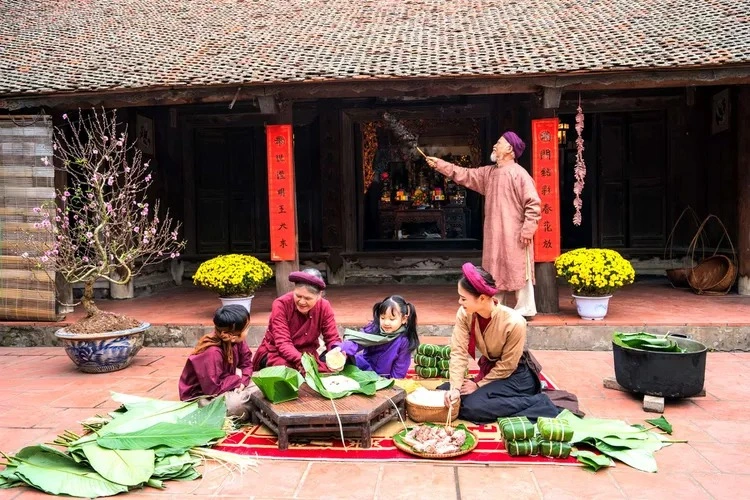
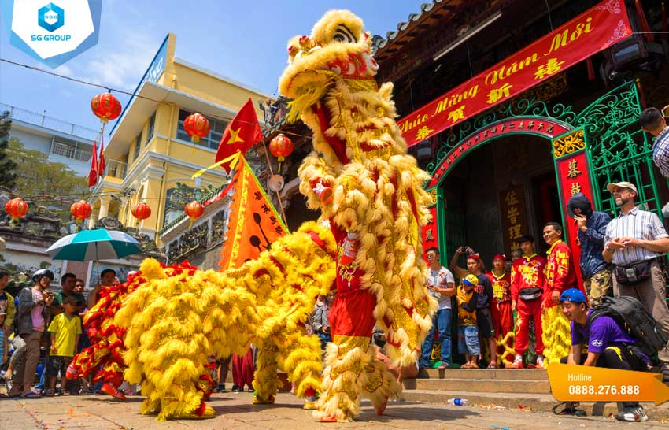
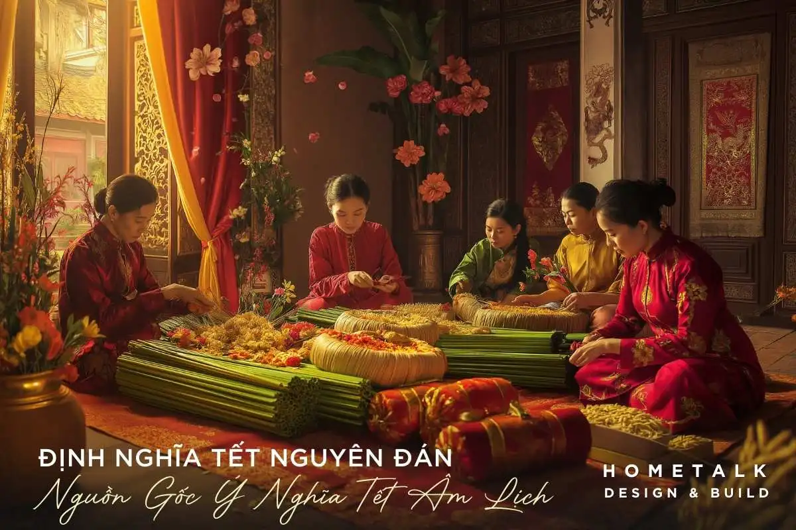
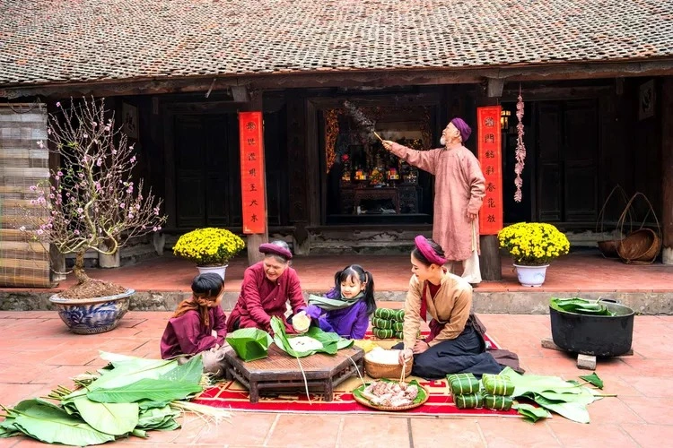
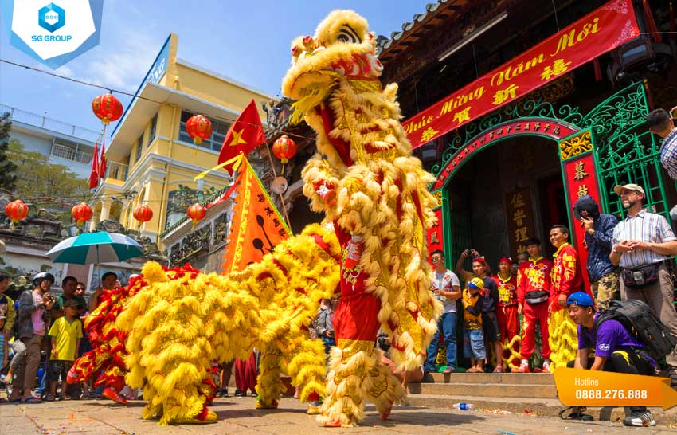
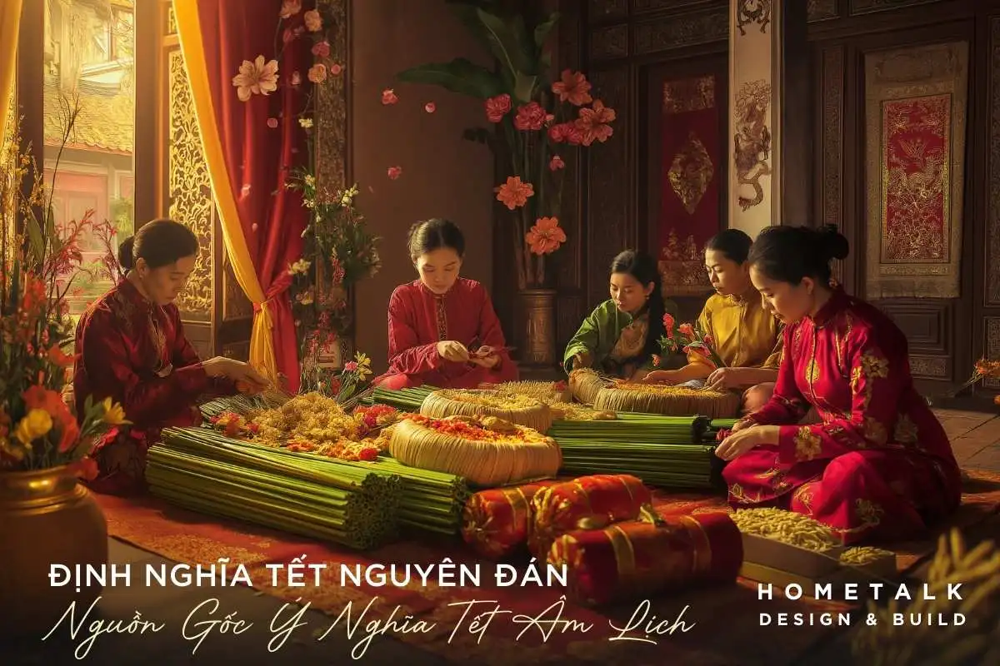
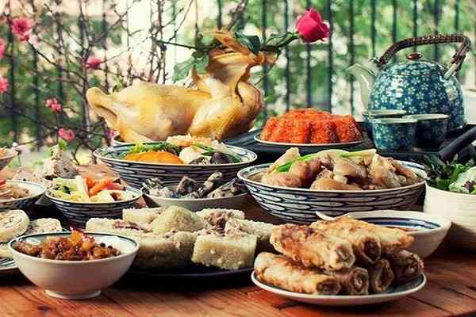
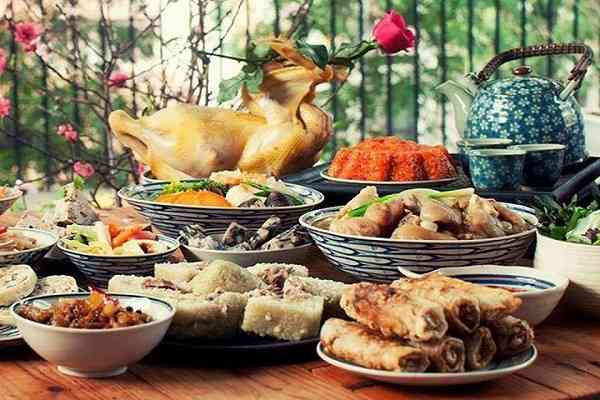

Giới thiệu Tết Nguyên Đán
Tết Nguyên Đán là lễ hội truyền thống lớn nhất và quan trọng nhất của dân tộc Việt Nam, đánh dấu sự khởi đầu của một năm mới theo lịch âm. Đây không chỉ là thời khắc chuyển giao giữa năm cũ và năm mới mà còn là dịp để con người hướng về cội nguồn, tưởng nhớ tổ tiên và vun đắp những giá trị gia đình thiêng liêng. Trong tâm thức người Việt, Tết mang ý nghĩa thiêng liêng, mở ra một chu kỳ mới của hy vọng, may mắn và bình an. Trước Tết, không khí rộn ràng lan tỏa khắp mọi miền đất nước. Người người nhà nhà dọn dẹp, trang hoàng nhà cửa, chuẩn bị mâm cỗ cúng gia tiên với mong muốn đón một năm mới sung túc. Những chợ hoa ngày Tết, sắc đào hồng thắm miền Bắc, mai vàng rực rỡ miền Nam tạo nên bức tranh xuân đầy sức sống. Tết cũng là dịp để mọi người tạm gác lại những lo toan thường nhật, dành thời gian sum họp bên gia đình và người thân. Với người Việt Nam, Tết Nguyên Đán không chỉ đơn thuần là một ngày lễ mà còn là biểu tượng của sự đoàn viên, lòng hiếu kính và truyền thống văn hóa lâu đời được gìn giữ qua nhiều thế hệ.
 





 
